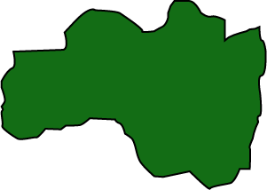
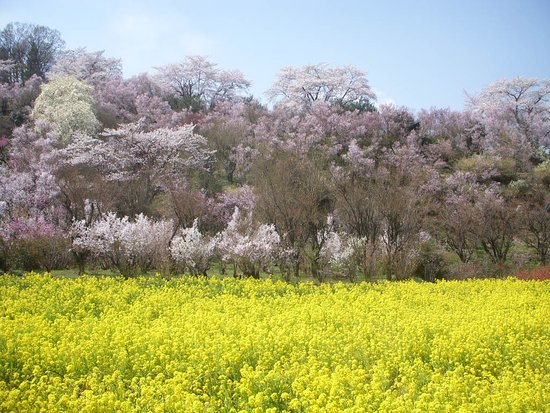
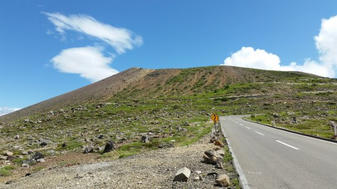
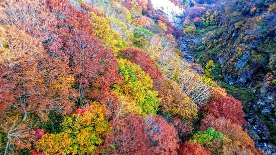

In the aftermath of the earthquake and the tsunami that followed, the outer housings of two of the six reactors at the Fukushima Daiichi Nuclear Power Plant in Ōkuma exploded followed by a partial meltdown and fires at three of the other units. Many residents were evacuated to nearby localities due to the development of a large evacuation zone around the plant. Radiation levels near the plant peaked at 400 mSv/h (millisieverts per hour) after the earthquake and tsunami, due to damage sustained. (Source: Wikipedia)
Prefecture Image
Hanamiyama Park
Azuma Kofuji Volcano
Bandai-Azuma Skyline
